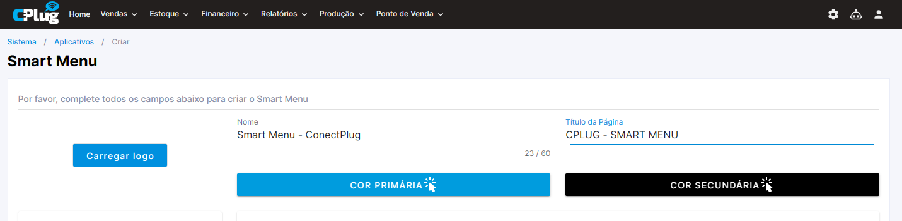
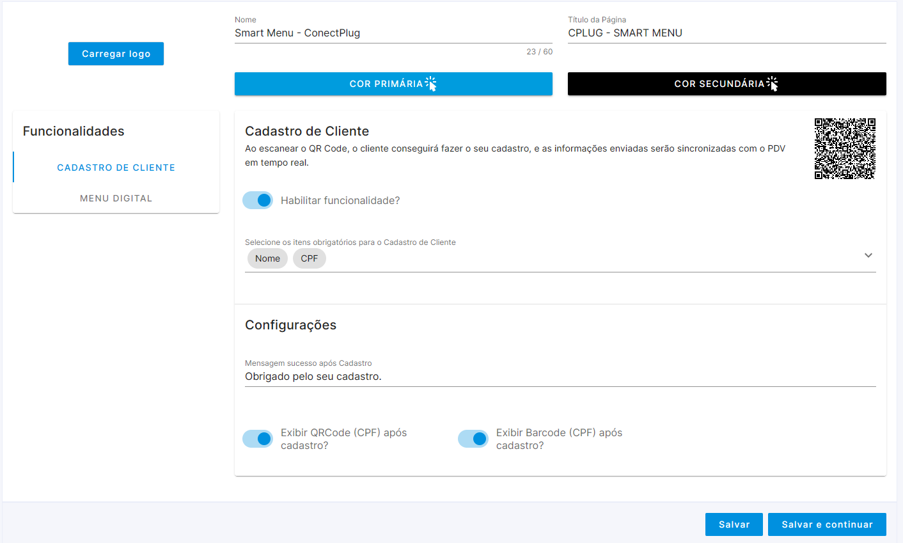
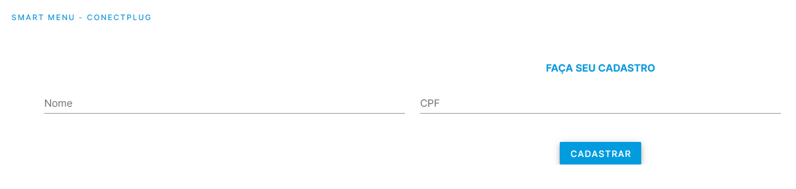
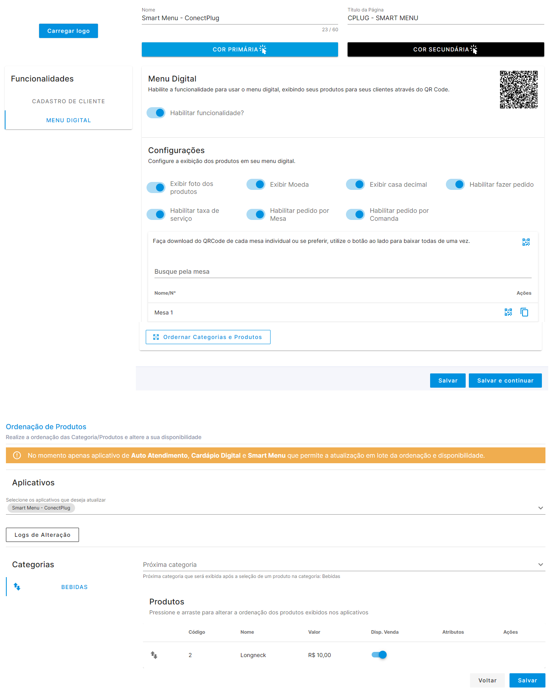
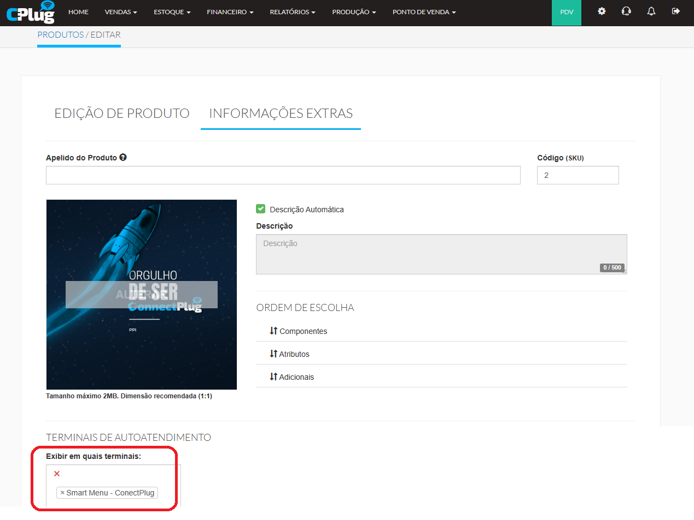
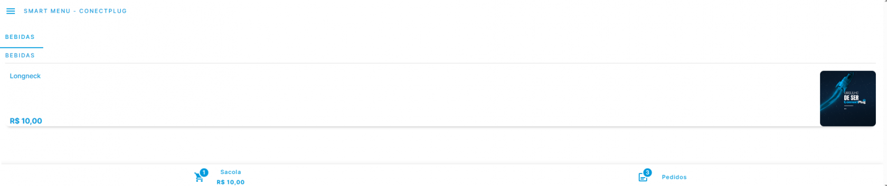

Módulo dá a possibilidade de duas funções distintas: possibilita o cadastro antecipado de clientes, para facilitar e otimizar tempo, onde o cliente pode realizar o cadastro via url, tendo a possibilidade de se gerar um QRCODE para ser lido pelo PDV ou pelo Atendimento de mesas e comandas; além disso a possibilidade de disponibilizar um MENU DIGITAL , onde o cliente pode consultar o cardápio e realizar pedidos que sejam enviados automaticamente para o PDV.
1. Criação de Aplicativo
Caminho da tela abaixo:
ERP>Ponto de Venda>Aplicativos>Cadastrar Novo Aplicativo>Novo Smart Menu

Clique em CARREGAR LOGO para definir o logotipo que será exibido
Defina o nome e título da página que será exibida na URL
Escolha COR PRIMÁRIA E COR SECUNDÁRIA de sua preferência
2. Funcionalidade - Cadastro de Cliente
Caminho da tela abaixo:
ERP>Ponto de Venda>Aplicativos>Cadastrar Novo Aplicativo>Novo Smart Menu

Após marcar a funcionalidade CADASTRO DE CLIENTE clicando em HABILITAR FUNCIONALIDADE? defina os itens que serão obrigatórios para o cadastro de cliente, entre os itens abaixo:
Nome
Telefone
CPF
E-mail
Data de Nascimento
Gênero
Defina uma mensagem que será exibida após o cliente realizar o cadastro
Quando utilizar CPF como um dos itens obrigatórios, tenha a possibilidade de marcar a exibição do QRCODE ou BARCODE do respectivo cliente para que o mesmo possa apresentar e as informações do cliente sejam carregadas em tempo real no PDV.
Se clicar no QRCODE na frente do CADASTRO DE CLIENTE será possivel copiar o link para URL do SMART MENU ou realizar o download do QRCODE para impressão.
Após isso clique em SALVAR OU SALVAR E CONTINUAR e continuar para efetivar as alterações.
Exemplo de URL - Cadastro de Cliente:

3. Funcionalidade - Menu Digital
Caminho da tela abaixo:
ERP>Ponto de Venda>Aplicativos>Cadastrar Novo Aplicativo>Novo Smart Menu

Após marcar a funcionalidade MENU DIGITAL clicando em HABILITAR FUNCIONALIDADE? defina as particularidades da URL, entre as opções abaixo:
Exibir foto dos produtos: Com este flag serão exibidas as imagens que podem ser cadastradas em ERP>Estoque>Cadastros>Produtos> Informações Extras
Exibir moeda: No menu digital será exibido a moeda correspondente dos valores dos produtos
Exibir casa decimal: Assim como a exibição da moeda, as casas decimais dos valores de venda serão exibidas.
Habilitar fazer pedido: Com este flag o cliente poderá adicionar o produto a sua SACOLA E REALIZAR O PEDIDO , neste momento o pedido será enviado ao PDV, se houver impressora instalada o mesmo já será impresso automaticamente.
Habilitar taxa de serviço: Existindo a marcação e valores de taxa de serviço para, os valores serão aplicados ao pedido realizado
Habilitar pedido por Mesa: Com esta marcação será possivel gerar uma URL exclusiva por mesa, facilitando a utilização dos pedidos, nesta operação será possivel gerar QRCODE e URL exclusivos para cada mesa.
Habilitar pedido por comanda: Parecido com o habilitar pedido por mesa, no momento de se realizar o pedido, será possivel o cliente informar sua a identificação de sua comanda.
Vínculo de produtos ao MENU DIGITAL:
Caminho da tela abaixo:
ERP>Estoque>Cadastros>Produtos>Informações Extras

No respectivo produto, em TERMINAIS DE AUTOATENDIMENTO>EXIBIR EM QUAIS TERMINAIS: marque o respectivo SMART MENU que será utilizado como Menu Digital.
Exemplo de URL - Menu Digital:

Duvidas Comuns
1. Na funcionalidade Cadastro de Cliente, é possivel o cliente verificar as informações que ele já cadastrou e/ou editar seu cadastro?
Não para as duas situações, o cliente poderá apenas criar um novo cadastro, se houverem informações repetidas o sistema poderá sobrescrever ou duplicar o respectivo cadastro.
2. Na funcionalidade Menu Digital, é possivel o cliente realizar um pedido para Delivery?
Não, os pedidos são gerados apenas para vendas da modalidade Balcão.
3. Na funcionalidade Menu Digital, é possivel realizar pagamentos?
Não, a funcionalidade existe para facilitar os pedidos feitos no estabelecimento, enviado os pedidos diretamente ao PDV, mas o pagamento deverá ser feito diretamente no PDV.